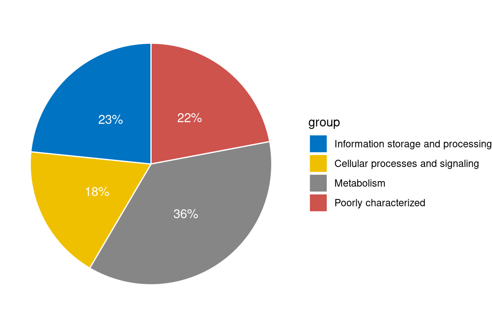

Functional analysis of differentially expressed genes
1 Setup
1.1 Libraries
2 Read data
Differentially expressed genes from last script
Rows: 186215 Columns: 13
── Column specification ────────────────────────────────────────────────────────
Delimiter: "\t"
chr (5): strainID, gene, chromosome, strand, comparison
dbl (8): start, end, length, logFC, logCPM, F, PValue, FDR
ℹ Use `spec()` to retrieve the full column specification for this data.
ℹ Specify the column types or set `show_col_types = FALSE` to quiet this message.CPM expression matrix from last script
Rows: 208594 Columns: 13
── Column specification ────────────────────────────────────────────────────────
Delimiter: "\t"
chr (1): gene
dbl (12): ZDCK1, ZDCK2, ZDCK3, ZDCE1, ZDCE2, ZDCE3, ZDP1, ZDP2, ZDP3, ZDD1, ...
ℹ Use `spec()` to retrieve the full column specification for this data.
ℹ Specify the column types or set `show_col_types = FALSE` to quiet this message.Annotations from eggnoggmapper
Show/hide code
annotations <- read_tsv(
here::here(
"_data_raw",
"eggnoggmapper",
"nanjingSynCom122_combined.emapper.annotations.xz"
),
skip = 5,
col_names = c(
"query",
"seed_ortholog",
"evalue",
"score",
"eggNOG_OGs",
"max_annot_lvl",
"COG_category",
"Description",
"Preferred_name",
"GOs",
"EC",
"KEGG_ko",
"KEGG_Pathway",
"KEGG_Module",
"KEGG_Reaction",
"KEGG_rclass",
"BRITE",
"KEGG_TC",
"CAZy",
"BiGG_Reaction",
"PFAMs"
)
)Warning: One or more parsing issues, call `problems()` on your data frame for details,
e.g.:
dat <- vroom(...)
problems(dat)Rows: 548626 Columns: 21
── Column specification ────────────────────────────────────────────────────────
Delimiter: "\t"
chr (19): query, seed_ortholog, eggNOG_OGs, max_annot_lvl, COG_category, Des...
dbl (2): evalue, score
ℹ Use `spec()` to retrieve the full column specification for this data.
ℹ Specify the column types or set `show_col_types = FALSE` to quiet this message.3 Fig. 5d: Ordination (PCA)
Perform PCA - Note vegan::rda() when specified without a formula is just a PCA
Call:
rda(X = t(cpm_combined_mat), scale = TRUE)
Partitioning of correlations:
Inertia Proportion
Total 208594 1
Unconstrained 208594 1
Eigenvalues, and their contribution to the correlations
Importance of components:
PC1 PC2 PC3 PC4 PC5
Eigenvalue 68424.952 3.221e+04 2.129e+04 1.593e+04 1.335e+04
Proportion Explained 0.328 1.544e-01 1.020e-01 7.635e-02 6.401e-02
Cumulative Proportion 0.328 4.824e-01 5.845e-01 6.608e-01 7.248e-01
PC6 PC7 PC8 PC9 PC10
Eigenvalue 1.167e+04 1.050e+04 9.582e+03 9.385e+03 8.243e+03
Proportion Explained 5.595e-02 5.032e-02 4.593e-02 4.499e-02 3.952e-02
Cumulative Proportion 7.808e-01 8.311e-01 8.770e-01 9.220e-01 9.615e-01
PC11
Eigenvalue 8.022e+03
Proportion Explained 3.846e-02
Cumulative Proportion 1.000e+00First 5 principal components explain about 64% of the variance in community expression
Show/hide code
# gets sample ordinations for the the PCA (unconstrained)
pca_u <- data.frame(pca_result$CA$u) %>%
tibble::rownames_to_column(var = "sample") %>%
mutate(treat = case_when(str_detect(sample, "ZDCE") ~ "SC_N1",
str_detect(sample, "ZDP") ~ "SC_N2",
str_detect(sample, "ZDD") ~ "SC_N3",
TRUE ~ "SC"))
# save this in case colleagues want to plot it themselves
write_tsv(pca_u, here::here("data", "pca_results.tsv"))Plot the results
Show/hide code
ggplot(pca_u, aes(x = PC1, y = PC2)) +
# to prevent overlapping
geom_jitter(aes(fill = treat), alpha = 1, size = 3, shape = 21, width = 0.05, height = 0.05) +
labs(x = "PC1 (33%)", y = "PC2 (15%)", fill = "") +
coord_fixed() +
theme_bw() +
theme(
panel.grid.major = element_blank(),
panel.grid.minor = element_blank(),
panel.background = element_blank(),
strip.placement = 'outside',
strip.background = element_blank(),
legend.position = "bottom"
)
This plot basically looks the earlier version where I didn’t know how the analysis was performed (potentially not separated by species). However, there does seem to be some additional variability between the control replicates.
4 Fig. 5e: Up and down regulated genes
Show/hide code
dges %>%
filter(comparison != "allN_versus_SC") %>%
mutate(direction = factor(if_else(logFC < 0, "Down", "Up"),
levels = c("Up", "Down"))) %>%
mutate(sps = factor(if_else(strainID %in% c("KLE1", "RAO1", "PAR1"), strainID, "Others"),
levels = c("KLE1", "RAO1", "PAR1", "Others"))) %>%
ggplot(aes(x = direction)) +
geom_bar(aes(fill = sps)) +
scale_fill_manual(values = c("orange", "limegreen", "dodgerblue", "grey80")) +
labs(x = "", y = "Differentially expressed genes\nrelative to control (SC)",
fill = "Species") +
facet_grid(~comparison) +
theme_bw() +
theme(
panel.grid.major = element_blank(),
panel.grid.minor = element_blank(),
panel.background = element_blank(),
strip.placement = 'outside',
strip.background = element_blank(),
legend.position = "bottom"
)
There are some key similarities between the original plot and this one. Indeed, more genes’ transcripts appear to be more over-expressed than under-expressed in the presence of predators than in the absence of predators. One could interpret this as reflecting that predators ‘turn on’ more bacterial genes than they ‘turn off’ which is consistent with prior work. However, here the taxonomic distribution of the expression seems less skewed towards the focal species than in the original analysis. I suspect this is because the original analysis did not account for the fact that RAO1 and KLE1 DNA templates dramatically increased in abundance in the predator treatments. By analyzing each species separately and then aggregating them, this analysis minimizes the effect of species abundance changes and so we get a more even taxonomic distribution.
5 Fig. 5f: Shared DGEs
Show/hide code

Again some similarities and differences here relative to the original. We find about the same total number of genes shared between the three treatments. However, there are more genes unique to each than before, which is what I would expect. Also it appears that the N3 treatment is quite distinct meaning there are many differentially abundant transcripts responding uniquely to Distolabrellus veechi while bacterial respond more similarly to Caenorhabditis elegans and Panagrolaimus sp. NJ.
Another thing that I did in the GLM from the last script was code the model contrasts so that we could focus on genes that are on average differentially abundant across the three predator species compared to the control. This approach should find the same genes at the center of the Venn diagram in Fig. 5f.
Show/hide code
Ok so this is performing how we would expect… My custom coded contrasts give about the same number of genes in the center of the Venn Diagram (12352 vs 12465) while it also identifies 32587 genes that were on average diffrentially expressed in response to a predator that are not shared in the Venn diagram. These 35587 genes will include those that are for example included in 2/3 predators or maybe even 1/3 predator treatments if the signal is strong enough.
6 Functional distributions
Focusing on shared genes between all worms
Show/hide code
COG_info <- read_tsv(
"https://ftp.ncbi.nlm.nih.gov/pub/COG/COG2024/data/cog-24.fun.tab",
skip = 1,
col_names = c("COG_category", "group", "color", "COG_description")
) %>%
filter(!(COG_category %in% c("1", "2", "3", "4"))) %>%
mutate(
group = case_when(
group == "1" ~ "Information storage and processing",
group == "2" ~ "Cellular processes and signaling",
group == "3" ~ "Metabolism",
group == "4" ~ "Poorly characterized"
)
) %>%
mutate(
COG_description = if_else(COG_category == "X", color, COG_description),
color = if_else(COG_category == "X", NA_character_, color)
) %>%
mutate(group = factor(
group,
levels = c(
"Information storage and processing",
"Cellular processes and signaling",
"Metabolism",
"Poorly characterized"
)
)) %>%
mutate(COG_category = factor(
COG_category,
levels = c("J", "A", "K", "L", "B", "D", "Y", "V", "T", "M", "N",
"Z", "W", "U", "O", "X", "C", "G", "E", "F", "H", "I", "P", "Q",
"R", "S"
)
))Warning: One or more parsing issues, call `problems()` on your data frame for details,
e.g.:
dat <- vroom(...)
problems(dat)Rows: 29 Columns: 4
── Column specification ────────────────────────────────────────────────────────
Delimiter: "\t"
chr (4): COG_category, group, color, COG_description
ℹ Use `spec()` to retrieve the full column specification for this data.
ℹ Specify the column types or set `show_col_types = FALSE` to quiet this message.Get summary of the distribution of COGs
Show/hide code
genes_shared_3_worms_annotated %>%
count(group) %>%
mutate(prop = n/sum(n)) %>%
mutate(prop_chr = paste0(round(prop*100), "%")) %>%
arrange(desc(group)) %>%
mutate(lab.ypos = cumsum(prop) - 0.5*prop) %>%
ggplot(aes(x="", y=prop, fill=group)) +
geom_col(width = 1, color = "white") +
coord_polar("y", start=0) +
geom_text(aes(y = lab.ypos, label = prop_chr), color = "white")+
scale_fill_manual(values = c("#0073C2FF", "#EFC000FF", "#868686FF", "#CD534CFF")) +
theme_void()
So we see basically that most DEGs fall into the COG “Metabolism” category. Now let’s look at the detailed breakdown within these categories. Now we are focusing only on genes with >= 5 abs(logFC) so we need to go back a bit and do some formatting
Show/hide code
genes_shared_3_worms_annotated_5filt %>%
# remove poorly characterized/unknown functions
filter(group != "Poorly characterized") %>%
mutate(sps = factor(if_else(strainID %in% c("KLE1", "RAO1", "PAR1"), strainID, "Others"),
levels = c("KLE1", "RAO1", "PAR1", "Others"))) %>%
ggplot(aes(x = fct_infreq(COG_category))) +
geom_bar(aes(fill = sps)) +
facet_wrap(~group, scales = "free_x", ncol = 4) +
scale_fill_manual(values = c("orange", "limegreen", "grey80")) +
scale_x_discrete(guide = guide_axis(angle = 90)) +
labs(x = "COG cateogry", y = "Differentially expressed genes\nrelative to control (SC)",
fill = "Species") +
theme_bw() +
theme(
panel.grid.major = element_blank(),
panel.grid.minor = element_blank(),
panel.background = element_blank(),
strip.placement = 'outside',
strip.background = element_blank(),
legend.position = "bottom"
)Just focusing on “Metabolism”
Show/hide code
genes_shared_3_worms_annotated_5filt %>%
# remove poorly characterized/unknown functions
filter(group == "Metabolism") %>%
mutate(sps = factor(if_else(strainID %in% c("KLE1", "RAO1", "PAR1"), strainID, "Others"),
levels = c("KLE1", "RAO1", "PAR1", "Others"))) %>%
ggplot(aes(x = fct_infreq(COG_category, ))) +
geom_bar(aes(fill = sps)) +
facet_wrap(~group) +
scale_fill_manual(values = c("orange", "limegreen", "grey80")) +
scale_x_discrete(guide = guide_axis(angle = 90)) +
labs(x = "COG cateogry", y = "Differentially expressed genes\nrelative to control (SC)",
fill = "Species") +
theme_bw() +
theme(
panel.grid.major = element_blank(),
panel.grid.minor = element_blank(),
panel.background = element_blank(),
strip.placement = 'outside',
strip.background = element_blank(),
legend.position = "bottom"
)In agreement with the earlier analysis, I see a trend that differentially abundant genes are primarily associated with cellular metabolism - in particular, genes involved in Carbohydrate, Amino acid, and inorganic ion (e.g., trace metals) metabolism.
However, the earlier analysis noted that a large number of genes putatively involved in antibiotic biosynthesis were differentially regulated in response to predators, particularly in RAO1 and KLE1. I do not see that here. I annotated the RAO1 and KLE1 genomes using antiSMASH. Results for KLE1 are here and results for RAO1 are here. In neither of these genomes do I see any obvious gene clusters related to antibiotic biosynthesis. In fact, neither of them have very many secondary metabolite genes at all. Thus, I am skeptical about Fig 3g that shows that almost 250 genes related to antibiotic biosynthesis are differentially regulated in KLE1 when KLE1 doesn’t even have 25 genes related to secondary metabolite biosynthesis… This could be due to differences in how we annotated the genomes (I used a local installation of eggnoggmapper), but I don’t think annotation differences would produce this large of a discrepancy.
More than likely this has to do with the fact that the prior analysis combined differential expression and differential template abundances into one aggregate finding. It is true that if KLE1 and RAO1 are more abundant in predator treatments but express antibiotic biosynthesis genes at the same level then the absolute antibiotic concentration might be higher in predator treatments… This is pure speculation though. But framing the discussion that these species upregulate or downregulate these pathways (i.e., a change in the per capita production of antibiotics) in resposne to predator is incorrect.